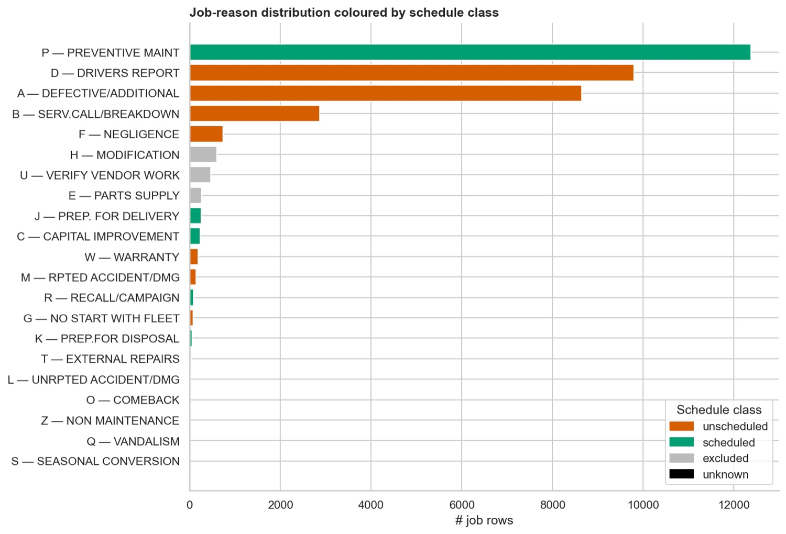
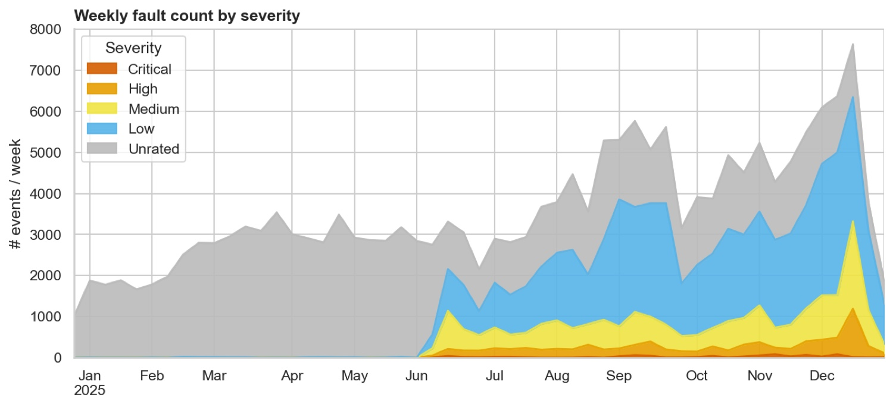
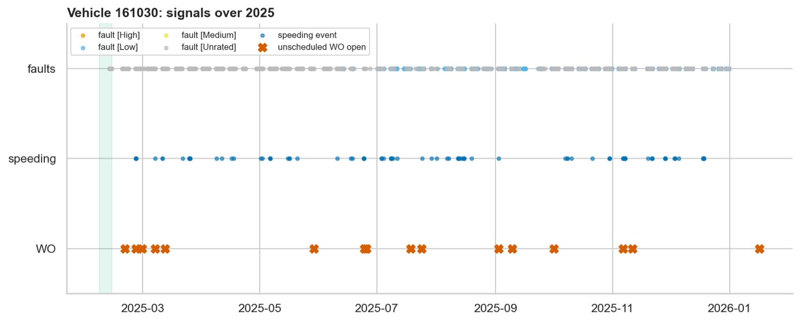

-
01
Three datasets, one fleet
The City provided three exports about the same vehicles, each telling a different part of the story.
DRIVING EVENTS43,118speeding incidents · 598 vehicles · 2025FAULT ALERTS188,022engine fault events · 245 vehicles · 2025JOB HISTORY36,829work order lines · 734 vehicles · May 2024 to Feb 2026The first surprise was in the joins. One file stores vehicle IDs as numbers and another as zero-padded text, so about 5% of vehicles silently disappeared from every join until all IDs were normalised to six characters. After that, only 194 vehicles appear in all three datasets. That is the cohort a model can learn from.

FIG. 1 Vehicles covered by each dataset. Only 194 have driving, fault and repair data. Weather was not in the data, so I added daily Toronto weather from the Open-Meteo historical API and an Ontario statutory holiday calendar. Historical weather stands in for the 7-day forecast a live system would use.
-
02
What counts as a breakdown?
Before predicting unscheduled repairs, I had to define them.
Every job line carries a reason code, and the 21 codes split into three groups. Driver reports, defects found during other work, service calls, no-starts, accidents, comebacks, vandalism and warranty work count as unscheduled. Preventive maintenance, capital improvements, delivery and disposal prep, seasonal conversions and recalls are scheduled. Modifications, vendor checks and parts supply are left out of both. A work order counts as unscheduled if any of its lines is, because the real question is whether the truck goes into the shop.

FIG. 2 Job reasons, coloured by how they were classified. About 82% of work orders end up unscheduled, mostly driver reports and defects found during other work. -
03
The data changed halfway through the year
Before mid-June 2025, almost every fault alert is "Unrated". After that, a four-level severity scale suddenly appears.

FIG. 3 Weekly fault alerts by severity. Whatever changed in June, a firmware update or a richer feed, severity features only carry signal in the second half of the year. Telematics volume also grew all year: from about 1,500 to 6,000 fault alerts a week, and from about 150 to 1,500 speeding events. Unscheduled work orders stayed flat at around 200 a week. The trucks were not breaking down four times as often; more of them were simply being tracked. That is why every model feature is measured per vehicle rather than across the whole fleet.

FIG. 4 Weekly fault alerts, speeding events and unscheduled work orders across the modelling window. -
04
One truck's year
This is the raw material for one vehicle: faults, speeding events and the days it went into the shop.

FIG. 5 Signals over 2025 for a single vehicle. The model's job is to look at the weeks before each orange mark and learn what they have in common. -
05
The model
Each row is one vehicle on one day, and the target is whether an unscheduled work order opens in the next seven days.
ROWS69,452FEATURES37POSITIVE RATE10.2%VALIDATION5 foldsFeatures include rolling fault counts over 1, 7 and 30 days (and separately for critical and high severity), days since the last critical fault, speeding counts, minutes and kilometres, recent scheduled and unscheduled work orders, each vehicle's lifetime breakdown and fault rates, calendar and holiday flags, and trailing and forward-looking weather such as freeze-thaw days and snowfall.
The model is scikit-learn's HistGradientBoostingClassifier, compared against a simple baseline that predicts each vehicle's own historical breakdown rate. Both are evaluated with walk-forward validation: each fold trains on everything before a cut-off date and tests on the next 60 days, with no calendar day shared between training and testing.
FIG. 6 Walk-forward validation. The training window (grey) always ends before the test window (yellow), so the model never sees the future. Fold boundaries are drawn approximately. -
06
The baseline held its ground
The gradient-boosted model did not beat the simple per-vehicle baseline in any meaningful way.
Mean ± standard deviation across the five walk-forward folds. Higher is better for ROC-AUC and PR-AUC; lower is better for the Brier score. Both models clear the 10.2% base rate.
The model gained a little on PR-AUC but lost on ROC-AUC and Brier score. SHAP shows why: the three most important features are a vehicle's lifetime breakdown rate, days since its last unscheduled repair, and its lifetime fault rate. All three describe the vehicle's history. Recent faults and weather do contribute, but an order of magnitude less. In this data, the best predictor of a truck going into the shop next week is how often it has gone into the shop before.

FIG. 7 SHAP summary for the final model. Features are ordered by their overall impact on predictions. -
07
Recommendations
1 · MOST IMPORTANTTrack more of the fleet
Only 194 of the City's 5,000-plus heavy-duty units have all three signals. More telematics coverage would help more than any amount of feature engineering on the current cohort.
2Look further ahead
Freeze-thaw cycles and component wear take longer than seven days to turn into breakdowns. The same features at 30 or 60 days would probably show more lift.
3Add asset data
Vehicle age, odometer, model year and replacement cost already live in the fleet management system and would likely discriminate better than event counts alone.
4Use it as an inspection list
Threshold the predicted probability into a weekly top-N list sized to the shop's capacity, with a SHAP explanation next to each vehicle.
IN THE REPOSITORY
With the City's data files in place, the whole pipeline runs with one command. The raw data itself is not redistributed.
Take-home assessment for a Data Specialist position with City of Toronto Fleet Services. Weather: Open-Meteo Historical Weather API. This page is an independent project and is not published by the City of Toronto.